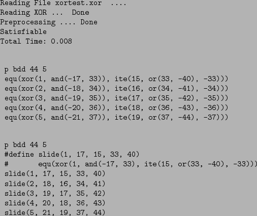

The canonical form only (that is, not cnf or xor formats,
among others) supports a rudimentary macro facility. A macro is
defined using the directive #define with the following
syntax:
#define <pattern> # <function-specifier>
where <pattern> consists of an identifier and a parenthesized
argument list. Wherever the <pattern> is matched in the file,
<function-specifier> is substituted. Then, <function-specifier> takes as parameters those arguments specified in
<pattern>.
Many inputs, particularly those representing an ``unfolding'' of some
form of temporal logic, consist of a high percentage of functions
which are identical except that all variable input numbers are
displaced by some amount. In such a case there is a shortened way to
express those functions using #define. For example, the file
of Figure 8 may be written equivalently as the
file of Figure 9. More information about #define is found in Section 9.1.5,
Page  .
.
|  |